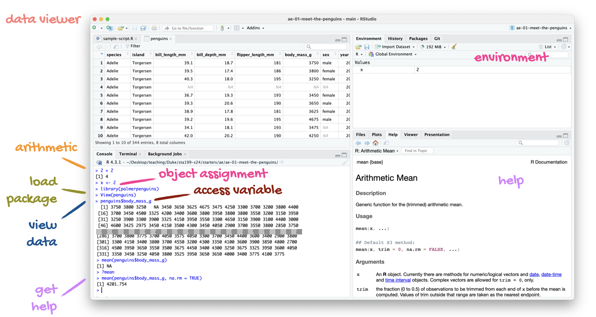
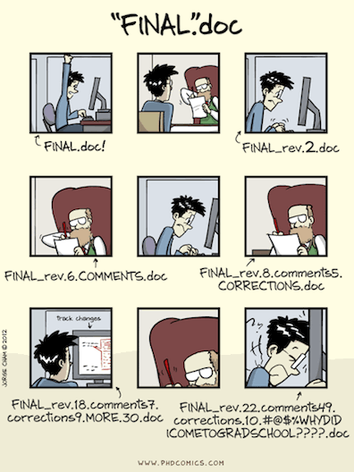
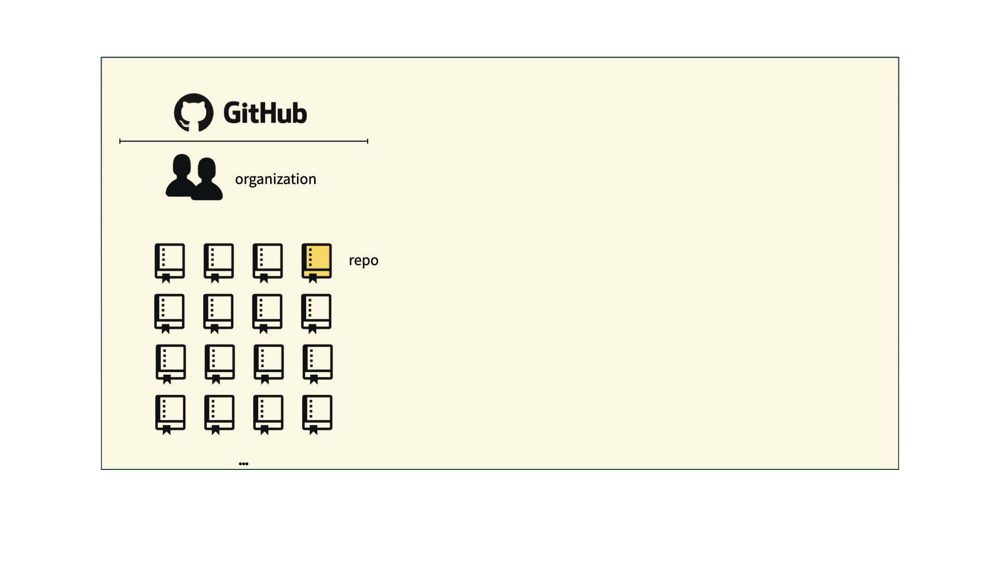
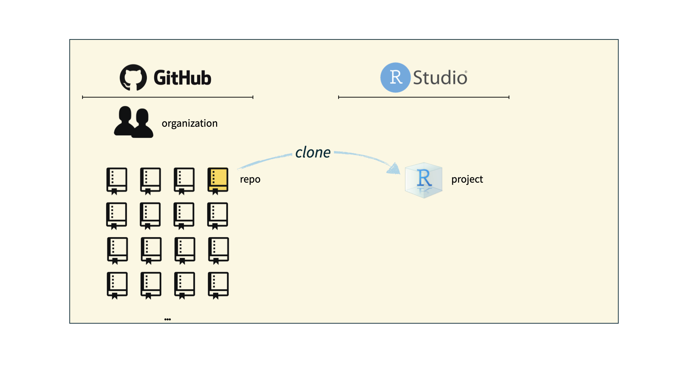
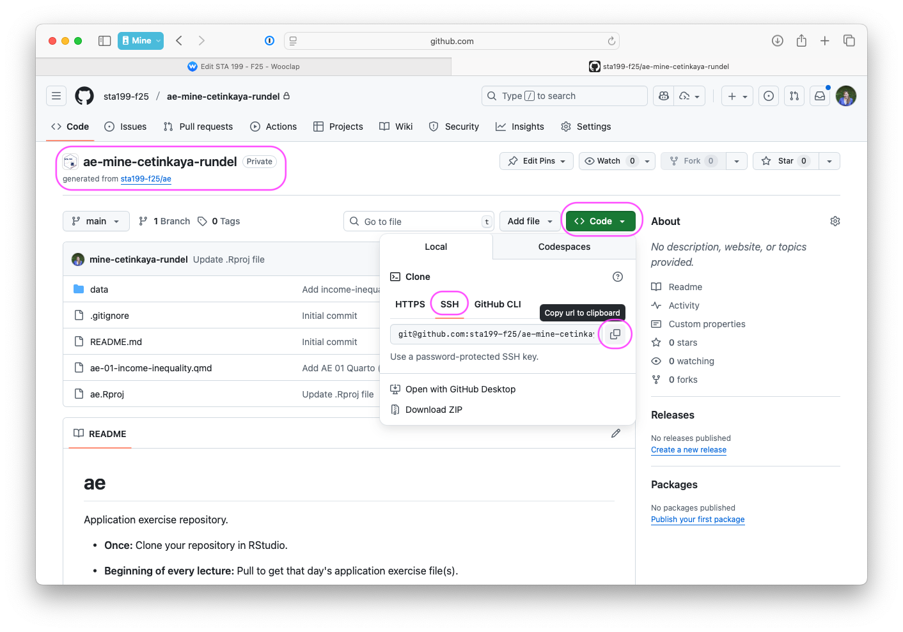

Meet the toolkit
Lecture 2
Duke University
STA 199 - Fall 2025
August 28, 2025
From last time: Correction
Setup
- Load package we need for the analyis:
- Load the data:
Revisit: Cleaning up programming languages with AI
Code
library(ellmer)
chat <- chat_openai()
prompts <- survey |>
filter(!is.na(programming_languages)) |>
pull(programming_languages) |>
list()
type_language <- type_object(
language = type_string(),
experience = type_string()
)
language_experience <- parallel_chat_structured(chat, prompts, type = type_language)
language_experiencelanguage
1 Python, Java, R, C/C++, JavaScript, HTML/CSS, SQL, C#, VBA, MATLAB, Rust, Assembly, Swift, Stata, Bash, Typescript, Web3 Suite (HTML, CSS, JS), Nextflow, SAS, PsycoPy, Mathematica, React, Vue, Yaml, CourseKata, Flutter, Scratch
experience
1 Most students report a range of programming experience, from never having programmed before to being very comfortable in languages such as Python, Java, and R. Many took introductory courses (e.g., CS101, AP CS A) and are comfortable with basic programming constructs. Proficiency is generally highest in Python and Java, though some only have a little experience with languages like R, C/C++, and JavaScript. Quite a few have only used programming languages for specific classes or research projects and may not feel confident after a long break. Some students have experience with more niche or specialized tools such as MATLAB, SAS, and web technologies (HTML, CSS, JavaScript/JS frameworks). Many express a need for a refresher if not used recently. In summary, while a core group is comfortable with at least one language, especially Python or Java, many others have only basic to moderate experience and express the desire to gain more proficiency.Can it be trusted 100%?
Nextflow – didn’t show up before due to case mismatch (Netxflow vs. nextflow)
survey |>
mutate(programming_languages = str_to_lower(programming_languages)) |>
filter(str_detect(programming_languages, "nextflow")) |>
select(programming_languages)# A tibble: 1 × 1
programming_languages
<chr>
1 r (quite comfortable), bash (quite comfortable), python (less exper…PsychoPy – misspelled by AI (PsycoPy vs. PsychoPy) + case mismatch
survey |>
mutate(programming_languages = str_to_lower(programming_languages)) |>
filter(str_detect(programming_languages, "psychopy")) |>
select(programming_languages)# A tibble: 2 × 1
programming_languages
<chr>
1 psychopy (haven't used in while), matlab (minimal for fmri processi…
2 i have programmed with python before through psychopy. it was a ver…CourseKata – not a programming language but a learning platform
From last time: Course overview + policies
Tips for success
- Prepare: Watch videos and read before class
- Engage: Attend all lectures and labs actively
- Ask questions: Use office hours and Ed Discussion forum
- Start early: Don’t procrastinate on assignments
- Stay current: Content builds progressively
Support
- Help from humans:
- Attend office hours
- Ask and answer questions on the discussion forum
- Help from AI: Use the course chatbot (in Canvas!)
- Reserve email for questions on personal matters and/or grades
- Read the course support page
Announcements
- Posted on Canvas (Announcements tool) and sent via email, be sure to check both regularly
- I’ll assume that you’ve read an announcement by the next “business” day
- I’ll (try my best to) send a weekly update announcement each Friday, outlining the plan for the following week and reminding you what you need to do to prepare, practice, and perform
Diversity, inclusion, and belonging
It is my intent that students from all diverse backgrounds and perspectives be well-served by this course, that students’ learning needs be addressed both in and out of class, and that the diversity that the students bring to this class be viewed as a resource, strength and benefit.
- Fill out the Getting to know you survey.
- If you feel like your performance in the class is being impacted by your experiences outside of class, please don’t hesitate to come and talk with me. I want to be a resource for you. If you prefer to speak with someone outside of the course, your advisors, and deans are excellent resources.
- I (like many people) am still in the process of learning about diverse perspectives and identities. If something was said in class (by anyone) that made you feel uncomfortable, please talk to me about it.
Access and accommodations
The Duke Access and Accommodation Services is available to ensure that students are able to engage with their courses and related assignments.
Accoomodations for exams must be arranged through Access and Accommodation Services and exams with accommodations must be taken in the testing center.
I am committed to making all course materials accessible and I’m always learning how to do this better. If any course component is not accessible to you in any way, please don’t hesitate to let me know.
Late work, waivers, lecture recordings, regrades…
- We have policies!
- Read about them on the course syllabus and refer back to them when you need it
Participate 💻📱

Scan the QR code or go to app.wooclap.com/sta199.
Log in with your Duke NetID.
Use of AI tools
-
AI tools for code:
- Check your work after you’ve done it yourself, to polish and improve, not to do it for you from scratch.
- Be careful/critical! Working code
!=correct/good code. - Must explicitly cite, with at a minimum AI tool you’re using (e.g., ChatGPT) and your prompt. More guidance to be provided with assignments.
AI tools for narrative: Absolutely not!
AI tools for learning: Sure, but be careful/critical!
Academic integrity
To uphold the Duke Community Standard:
I will not lie, cheat, or steal in my academic endeavors;
I will conduct myself honorably in all my endeavors; and
I will act if the Standard is compromised.
A note on showing up and participating
This is a large “lecture” but with lots of opportunities and expectations for active learning, participation, and collaboration.
You are expected to show up and participate in all lectures and labs, though there are a good number of each you can miss without penalty.
It’s possible to read the books and watch the videos and get an exposure to the material we cover in the course without showing up, but the experience will be much less rich and you will likely miss out on a lot of learning. That’s why the assessments and workflows are designed to reward and reinforce active participation.
Course toolkit
Course toolkit
Course operation
- Materials: sta199-f25.github.io
- Submission: Gradescope (in Canvas)
- Content Q&A:
- Course chatbot (in Canvas)
- Ed Discussion (in Canvas)
- Grades: Gradebook (in Canvas)
Doing data science
- Computing:
- Language: R
- IDE: RStudio
- Packages: tidyverse (primarily), plus others
- Authoring: Quarto
- Version control:
- Tracking: Git
- Hosting and collaboration: GitHub
Toolkit: Computing
Learning goals
By the end of the course, you will be able to…
- gain insight from data
- gain insight from data, reproducibly
- gain insight from data, reproducibly, using modern programming tools and techniques
- gain insight from data, reproducibly and collaboratively, using modern programming tools and techniques
- gain insight from data, reproducibly (with literate programming and version control) and collaboratively, using modern programming tools and techniques
Reproducible data analysis
Reproducibility checklist
What does it mean for a data analysis to be “reproducible”?
Short-term goals:
- Are the tables and figures reproducible from the code and data?
- Does the code actually do what you think it does?
- In addition to what was done, is it clear why it was done?
Long-term goals:
- Can the code be used for other data?
- Can you extend the code to do other things?
Toolkit for reproducibility
- Scriptability – Coding as opposed to using a point-and-click tool \(\rightarrow\) R
- Literate programming – Code, narrative, output in one place, as opposed to copying and pasting code output into a document (e.g., Word or Google Doc) that contains the narrative \(\rightarrow\) Quarto
- Version control – Track changes with brief messages that describe those changes \(\rightarrow\) Git / GitHub
R and RStudio
R and RStudio

- R is an open-source statistical programming language
- R is also an environment for statistical computing and graphics
- It’s easily extensible with packages
- RStudio is a convenient interface for R called an IDE (integrated development environment), e.g. “I write R code in the RStudio IDE”
- RStudio is not a requirement for programming with R, but it’s very commonly used by R programmers and data scientists
R vs. RStudio

R packages
Packages: Fundamental units of reproducible R code, including reusable R functions, the documentation that describes how to use them, and sample data1
As of 27 August 2025, there are 22,578 R packages available on CRAN (the Comprehensive R Archive Network)2
We’re going to work with a small (but important) subset of these!
Tour: R + RStudio
Option 1:
Sit back and enjoy the show!
Tour recap: R + RStudio
A short list
(for now)
of R essentials
Packages
- Installed with
install.packages(), once per system:
Note
We already pre-installed many of the package you’ll need for this course, so you might go the whole semester without needing to run install.packages()!
- Loaded with
library(), once per session:
Packages, an analogy
If data analysis was cooking…
Installing a package would be like buying ingredients from the store
Loading a package would be like getting the ingredients out of your pantry and setting them on your counter top to be used
tidyverse
aka the package you’ll hear about the most…

- The tidyverse is an opinionated collection of R packages designed for data science
- All packages share an underlying philosophy and a common grammar
Data frames and variables
- Each row of a data frame is an observation
- Each column of a data frame is a variable
penguins data frame
# A tibble: 344 × 8
species island bill_length_mm bill_depth_mm flipper_length_mm
<fct> <fct> <dbl> <dbl> <int>
1 Adelie Torgersen 39.1 18.7 181
2 Adelie Torgersen 39.5 17.4 186
3 Adelie Torgersen 40.3 18 195
4 Adelie Torgersen NA NA NA
5 Adelie Torgersen 36.7 19.3 193
6 Adelie Torgersen 39.3 20.6 190
7 Adelie Torgersen 38.9 17.8 181
8 Adelie Torgersen 39.2 19.6 195
9 Adelie Torgersen 34.1 18.1 193
10 Adelie Torgersen 42 20.2 190
# ℹ 334 more rows
# ℹ 3 more variables: body_mass_g <int>, sex <fct>, year <int>bill_length_mm
[1] 39.1 39.5 40.3 NA 36.7 39.3 38.9 39.2 34.1 42.0 37.8 37.8 41.1
[14] 38.6 34.6 36.6 38.7 42.5 34.4 46.0 37.8 37.7 35.9 38.2 38.8 35.3
[27] 40.6 40.5 37.9 40.5 39.5 37.2 39.5 40.9 36.4 39.2 38.8 42.2 37.6
[40] 39.8 36.5 40.8 36.0 44.1 37.0 39.6 41.1 37.5 36.0 42.3 39.6 40.1
[53] 35.0 42.0 34.5 41.4 39.0 40.6 36.5 37.6 35.7 41.3 37.6 41.1 36.4
[66] 41.6 35.5 41.1 35.9 41.8 33.5 39.7 39.6 45.8 35.5 42.8 40.9 37.2
[79] 36.2 42.1 34.6 42.9 36.7 35.1 37.3 41.3 36.3 36.9 38.3 38.9 35.7
[92] 41.1 34.0 39.6 36.2 40.8 38.1 40.3 33.1 43.2 35.0 41.0 37.7 37.8
[105] 37.9 39.7 38.6 38.2 38.1 43.2 38.1 45.6 39.7 42.2 39.6 42.7 38.6
[118] 37.3 35.7 41.1 36.2 37.7 40.2 41.4 35.2 40.6 38.8 41.5 39.0 44.1
[131] 38.5 43.1 36.8 37.5 38.1 41.1 35.6 40.2 37.0 39.7 40.2 40.6 32.1
[144] 40.7 37.3 39.0 39.2 36.6 36.0 37.8 36.0 41.5 46.1 50.0 48.7 50.0
[157] 47.6 46.5 45.4 46.7 43.3 46.8 40.9 49.0 45.5 48.4 45.8 49.3 42.0
[170] 49.2 46.2 48.7 50.2 45.1 46.5 46.3 42.9 46.1 44.5 47.8 48.2 50.0
[183] 47.3 42.8 45.1 59.6 49.1 48.4 42.6 44.4 44.0 48.7 42.7 49.6 45.3
[196] 49.6 50.5 43.6 45.5 50.5 44.9 45.2 46.6 48.5 45.1 50.1 46.5 45.0
[209] 43.8 45.5 43.2 50.4 45.3 46.2 45.7 54.3 45.8 49.8 46.2 49.5 43.5
[222] 50.7 47.7 46.4 48.2 46.5 46.4 48.6 47.5 51.1 45.2 45.2 49.1 52.5
[235] 47.4 50.0 44.9 50.8 43.4 51.3 47.5 52.1 47.5 52.2 45.5 49.5 44.5
[248] 50.8 49.4 46.9 48.4 51.1 48.5 55.9 47.2 49.1 47.3 46.8 41.7 53.4
[261] 43.3 48.1 50.5 49.8 43.5 51.5 46.2 55.1 44.5 48.8 47.2 NA 46.8
[274] 50.4 45.2 49.9 46.5 50.0 51.3 45.4 52.7 45.2 46.1 51.3 46.0 51.3
[287] 46.6 51.7 47.0 52.0 45.9 50.5 50.3 58.0 46.4 49.2 42.4 48.5 43.2
[300] 50.6 46.7 52.0 50.5 49.5 46.4 52.8 40.9 54.2 42.5 51.0 49.7 47.5
[313] 47.6 52.0 46.9 53.5 49.0 46.2 50.9 45.5 50.9 50.8 50.1 49.0 51.5
[326] 49.8 48.1 51.4 45.7 50.7 42.5 52.2 45.2 49.3 50.2 45.6 51.9 46.8
[339] 45.7 55.8 43.5 49.6 50.8 50.2Participate 💻📱
Scan the QR code or go to app.wooclap.com/sta199. Log in with your Duke NetID.
flipper_length_mm
This can be fixed by using penguins$flipper_length_mm.
[1] 181 186 195 NA 193 190 181 195 193 190 186 180 182 191 198 185
[17] 195 197 184 194 174 180 189 185 180 187 183 187 172 180 178 178
[33] 188 184 195 196 190 180 181 184 182 195 186 196 185 190 182 179
[49] 190 191 186 188 190 200 187 191 186 193 181 194 185 195 185 192
[65] 184 192 195 188 190 198 190 190 196 197 190 195 191 184 187 195
[81] 189 196 187 193 191 194 190 189 189 190 202 205 185 186 187 208
[97] 190 196 178 192 192 203 183 190 193 184 199 190 181 197 198 191
[113] 193 197 191 196 188 199 189 189 187 198 176 202 186 199 191 195
[129] 191 210 190 197 193 199 187 190 191 200 185 193 193 187 188 190
[145] 192 185 190 184 195 193 187 201 211 230 210 218 215 210 211 219
[161] 209 215 214 216 214 213 210 217 210 221 209 222 218 215 213 215
[177] 215 215 216 215 210 220 222 209 207 230 220 220 213 219 208 208
[193] 208 225 210 216 222 217 210 225 213 215 210 220 210 225 217 220
[209] 208 220 208 224 208 221 214 231 219 230 214 229 220 223 216 221
[225] 221 217 216 230 209 220 215 223 212 221 212 224 212 228 218 218
[241] 212 230 218 228 212 224 214 226 216 222 203 225 219 228 215 228
[257] 216 215 210 219 208 209 216 229 213 230 217 230 217 222 214 NA
[273] 215 222 212 213 192 196 193 188 197 198 178 197 195 198 193 194
[289] 185 201 190 201 197 181 190 195 181 191 187 193 195 197 200 200
[305] 191 205 187 201 187 203 195 199 195 210 192 205 210 187 196 196
[321] 196 201 190 212 187 198 199 201 193 203 187 197 191 203 202 194
[337] 206 189 195 207 202 193 210 198function(argument)
Functions are (most often) verbs, followed by what they will be applied to in parentheses:
trimmed mean()
Help
Object documentation can be accessed with ?
Toolkit: Version control and collaboration
Git and GitHub

- Git is a version control system – like “Track Changes” features from Microsoft Word, on steroids
- It’s not the only version control system, but it’s a very popular one

GitHub is the home for your Git-based projects on the internet – like DropBox but much, much better
We will use GitHub as a platform for web hosting and collaboration (and as our course management system!)
Versioning - done badly
Versioning - done better

Versioning - done even better
with human readable messages

How will we use Git and GitHub?

How will we use Git and GitHub?
How will we use Git and GitHub?
How will we use Git and GitHub?

Git and GitHub tips
- There are millions of git commands – ok, that’s an exaggeration, but there are a lot of them – and very few people know them all. 99% of the time you will use git to add, commit, push, and pull.
- We will be doing Git things and interfacing with GitHub through RStudio, but if you google for help you might come across methods for doing these things in the command line – skip that and move on to the next resource unless you feel comfortable trying it out.
- There is a great resource for working with git and R: happygitwithr.com. Some of the content in there is beyond the scope of this course, but it’s a good place to look for help.
Tour: Git + GitHub
Option 1:
Sit back and enjoy the show!
Note
You’ll need to stick to this option if you haven’t yet accepted your GitHub invite and don’t have a repo created for you.
Option 2:
Go to the course GitHub organization and clone ae-YOUR-GITHUB-NAME repo to your container.
Tour recap: Git + GitHub
Find your application repo, that will always be named using the naming convention
assignment_title-YOUR-GITHUB-NAME, e.g.,ae-mine-cetinkaya-rundelorlab-1-mine-cetinkaya-rundel.Click on the green “Code” button, make sure SSH is selected, copy the repo URL

In RStudio, File > New Project > From Version Control > Git
Paste repo URL copied in previous step, then click tab to auto-fill the project name, then click Create Project
If you haven’t done Lab 0, for one time only, type
yesin the pop-up dialogue
What could have gone wrong?
Never received GitHub invite \(\rightarrow\) Fill out “Getting to know you survey
Never accepted GitHub invite \(\rightarrow\) Look for it in your email and accept it
Cloning repo fails \(\rightarrow\) Review/redo Lab 0 steps for setting up SSH key
Still no luck? Stay after class today or come by my office hours tomorrow or post on Ed for help
Quarto
Quarto
- Fully reproducible reports – each time you render the analysis is ran from the beginning
- Code goes in cells narrative goes outside of cells
- Optional: A visual editor for a familiar / Google docs-like editing experience